NPS_Skl01_Flash_00
dai-pn010-review-5efcc26a6874 · radial-flash-preview · pending
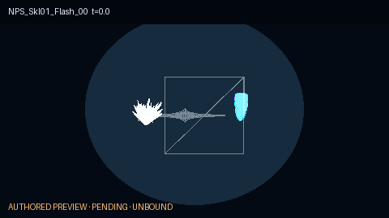
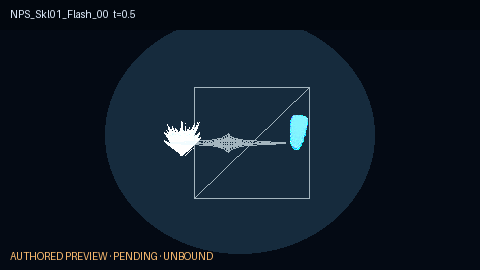
來源元件：5 貼圖／2 mesh。技能事件、Niagara 時序、骨架掛點均未指定。
六項全部待審、未綁定。畫面是以已驗證的 18 張貼圖與 8 顆 mesh 所作的安全程序化預覽；它不代表原作 Niagara 時序、技能事件、骨架掛點、完整特效或正式站內容。
dai-pn010-review-5efcc26a6874 · radial-flash-preview · pending


來源元件：5 貼圖／2 mesh。技能事件、Niagara 時序、骨架掛點均未指定。
dai-pn010-review-c040be6be782 · disk-flash-preview · pending
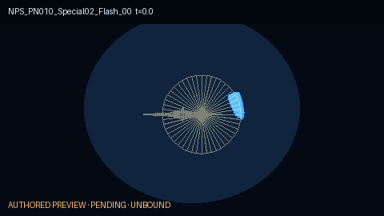
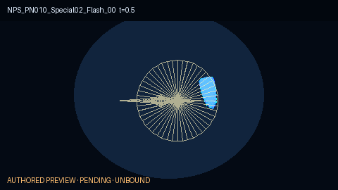
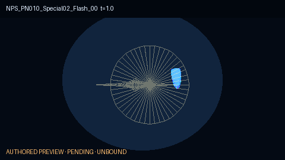
來源元件：4 貼圖／2 mesh。技能事件、Niagara 時序、骨架掛點均未指定。
dai-pn010-review-2682386eefc4 · slash-arc-preview · pending
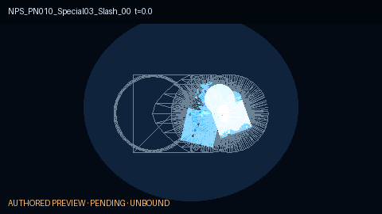
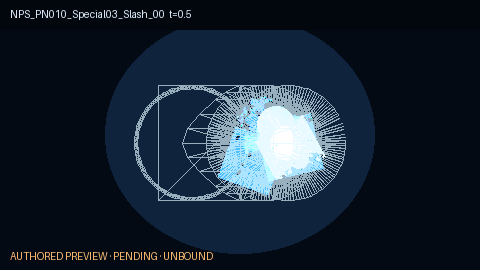
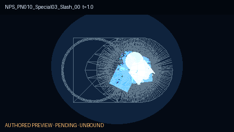
來源元件：12 貼圖／5 mesh。技能事件、Niagara 時序、骨架掛點均未指定。
dai-pn010-review-811a70524aec · thunder-billboard-preview · pending
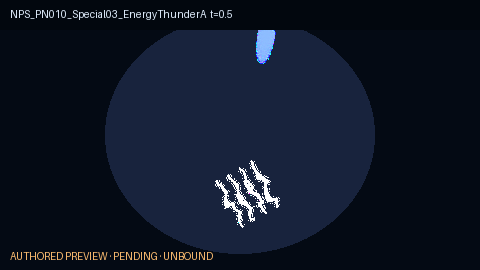
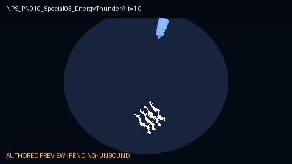
來源元件：4 貼圖／0 mesh。技能事件、Niagara 時序、骨架掛點均未指定。
dai-pn010-review-78c1869c7ed9 · ground-burst-preview · pending
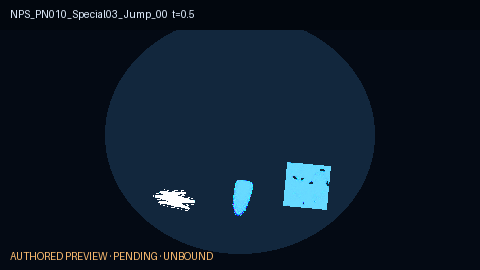
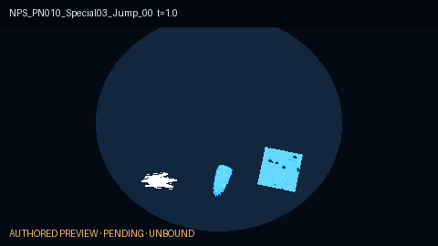
來源元件：5 貼圖／0 mesh。技能事件、Niagara 時序、骨架掛點均未指定。
dai-pn010-review-446d57b8bd17 · speedline-preview · pending
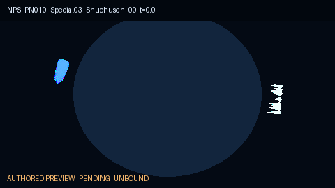
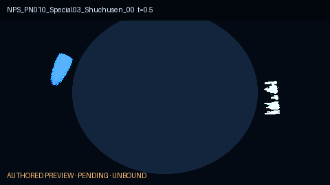
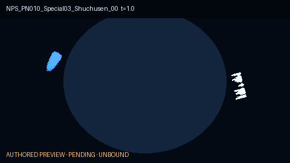
來源元件：4 貼圖／0 mesh。技能事件、Niagara 時序、骨架掛點均未指定。